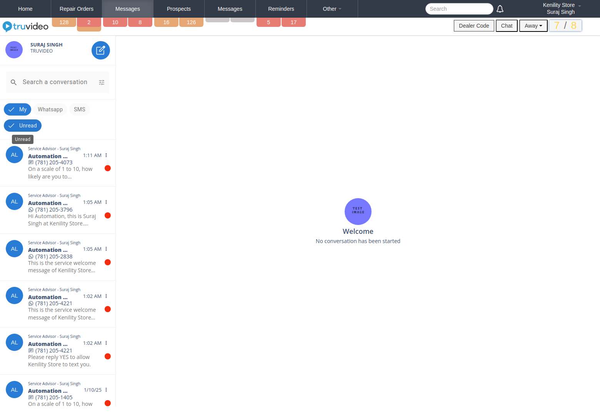

-
validateAllAvailableElementsOnForgotPasswordPage
8:58:14 AM / 00:00:00:460 Pass
validateAllAvailableElementsOnForgotPasswordPage
01.03.2025 8:58:14 AM 01.03.2025 8:58:14 AM 00:00:00:460 · #test-id=1 validateAllAvailableElementsOnForgotPasswordPage
validateAllAvailableElementsOnForgotPasswordPageStatus Timestamp Details Info 8:58:14 AM Failed to attach Jira Test IDs: No description provided for the test: validateAllAvailableElementsOnForgotPasswordPage Info 8:58:14 AM Trace: Download Trace Pass 8:58:14 AM -
verifyAllElementsAreAvailable_SignUpPage
8:58:15 AM / 00:00:00:414 Pass
verifyAllElementsAreAvailable_SignUpPage
01.03.2025 8:58:15 AM 01.03.2025 8:58:15 AM 00:00:00:414 · #test-id=2 verifyAllElementsAreAvailable_SignUpPage
verifyAllElementsAreAvailable_SignUpPageStatus Timestamp Details Info 8:58:15 AM Failed to attach Jira Test IDs: No description provided for the test: verifyAllElementsAreAvailable_SignUpPage Info 8:58:15 AM Trace: Download Trace Pass 8:58:15 AM -
verifyAllElementsOfLoginPage
8:58:15 AM / 00:00:00:696 Pass
verifyAllElementsOfLoginPage
01.03.2025 8:58:15 AM 01.03.2025 8:58:15 AM 00:00:00:696 · #test-id=3WA-5572,WA-5555 verifyAllElementsOfLoginPage
verifyAllElementsOfLoginPageStatus Timestamp Details Info 8:58:15 AM Test Case : WA-5572, WA-5555 Info 8:58:15 AM Trace: Download Trace Pass 8:58:15 AM -
verifyAlreadyHaveAccount_SignInButtonWorking
8:58:23 AM / 00:00:02:056 Fail
verifyAlreadyHaveAccount_SignInButtonWorking
01.03.2025 8:58:23 AM 01.03.2025 8:58:25 AM 00:00:02:056 · #test-id=4 verifyAlreadyHaveAccount_SignInButtonWorking
verifyAlreadyHaveAccount_SignInButtonWorkingStatus Timestamp Details Info 8:58:23 AM Failed to attach Jira Test IDs: No description provided for the test: verifyAlreadyHaveAccount_SignInButtonWorking Info 8:58:25 AM Trace: Download Trace Fail 8:58:25 AM -
verifyValidationOfResetPass_WithoutEnteringEmail
8:58:23 AM / 00:00:00:715 Pass
verifyValidationOfResetPass_WithoutEnteringEmail
01.03.2025 8:58:23 AM 01.03.2025 8:58:24 AM 00:00:00:715 · #test-id=5 verifyValidationOfResetPass_WithoutEnteringEmail
verifyValidationOfResetPass_WithoutEnteringEmailStatus Timestamp Details Info 8:58:23 AM Failed to attach Jira Test IDs: No description provided for the test: verifyValidationOfResetPass_WithoutEnteringEmail Info 8:58:24 AM Trace: Download Trace Pass 8:58:24 AM -
verifyIsCreateUserButtonWorking
8:58:24 AM / 00:00:02:078 Pass
verifyIsCreateUserButtonWorking
01.03.2025 8:58:24 AM 01.03.2025 8:58:26 AM 00:00:02:078 · #test-id=6 verifyIsCreateUserButtonWorking
verifyIsCreateUserButtonWorkingStatus Timestamp Details Info 8:58:24 AM Failed to attach Jira Test IDs: No description provided for the test: verifyIsCreateUserButtonWorking Info 8:58:26 AM Trace: Download Trace Pass 8:58:26 AM -
verifyIsForgotPasswordButtonWorking
8:58:31 AM / 00:00:02:430 Pass
verifyIsForgotPasswordButtonWorking
01.03.2025 8:58:31 AM 01.03.2025 8:58:34 AM 00:00:02:430 · #test-id=7 verifyIsForgotPasswordButtonWorking
verifyIsForgotPasswordButtonWorkingStatus Timestamp Details Info 8:58:31 AM Failed to attach Jira Test IDs: No description provided for the test: verifyIsForgotPasswordButtonWorking Info 8:58:34 AM Trace: Download Trace Pass 8:58:34 AM -
verifyValidationOfCorrectIncorrectEmailIds
8:58:32 AM / 00:00:02:119 Pass
verifyValidationOfCorrectIncorrectEmailIds
01.03.2025 8:58:32 AM 01.03.2025 8:58:34 AM 00:00:02:119 · #test-id=8 verifyValidationOfCorrectIncorrectEmailIds
verifyValidationOfCorrectIncorrectEmailIdsStatus Timestamp Details Info 8:58:32 AM Failed to attach Jira Test IDs: No description provided for the test: verifyValidationOfCorrectIncorrectEmailIds Info 8:58:34 AM Trace: Download Trace Pass 8:58:34 AM -
verifyValidationOnEnteringInvalidDealerCode
8:58:33 AM / 00:00:00:631 Pass
verifyValidationOnEnteringInvalidDealerCode
01.03.2025 8:58:33 AM 01.03.2025 8:58:34 AM 00:00:00:631 · #test-id=9 verifyValidationOnEnteringInvalidDealerCode
verifyValidationOnEnteringInvalidDealerCodeStatus Timestamp Details Info 8:58:33 AM Failed to attach Jira Test IDs: No description provided for the test: verifyValidationOnEnteringInvalidDealerCode Info 8:58:34 AM Trace: Download Trace Pass 8:58:34 AM -
verifyValidationOnEnteringValidDealerCode
8:58:41 AM / 00:00:00:777 Fail
verifyValidationOnEnteringValidDealerCode
01.03.2025 8:58:41 AM 01.03.2025 8:58:42 AM 00:00:00:777 · #test-id=10 verifyValidationOnEnteringValidDealerCode
verifyValidationOnEnteringValidDealerCodeStatus Timestamp Details Info 8:58:41 AM Failed to attach Jira Test IDs: No description provided for the test: verifyValidationOnEnteringValidDealerCode Info 8:58:42 AM Trace: Download Trace Fail 8:58:42 AM -
verifyUserAvailabilityValidation
8:58:41 AM / 00:00:01:777 Pass
verifyUserAvailabilityValidation
01.03.2025 8:58:41 AM 01.03.2025 8:58:43 AM 00:00:01:777 · #test-id=11 verifyUserAvailabilityValidation
verifyUserAvailabilityValidationStatus Timestamp Details Info 8:58:41 AM Failed to attach Jira Test IDs: No description provided for the test: verifyUserAvailabilityValidation Info 8:58:43 AM Trace: Download Trace Pass 8:58:43 AM -
testLogin
8:58:41 AM / 00:00:01:899 Fail
testLogin
01.03.2025 8:58:41 AM 01.03.2025 8:58:43 AM 00:00:01:899 · #test-id=12WA-5571 testLogin
testLoginStatus Timestamp Details Info 8:58:41 AM Test Case : WA-5571 Info 8:58:43 AM Trace: Download Trace Fail 8:58:43 AM -
verifySendPasswordRecoveryMail
8:58:48 AM / 00:00:04:176 Pass
verifySendPasswordRecoveryMail
01.03.2025 8:58:48 AM 01.03.2025 8:58:52 AM 00:00:04:176 · #test-id=13 verifySendPasswordRecoveryMail
verifySendPasswordRecoveryMailStatus Timestamp Details Info 8:58:48 AM Failed to attach Jira Test IDs: No description provided for the test: verifySendPasswordRecoveryMail Info 8:58:52 AM Trace: Download Trace Pass 8:58:52 AM -
verifyValidationWhenClickedOnCheckUserButton_WithotEnteringEmailId
8:58:50 AM / 00:00:30:163 Fail
verifyValidationWhenClickedOnCheckUserButton_WithotEnteringEmailId
01.03.2025 8:58:50 AM 01.03.2025 8:59:20 AM 00:00:30:163 · #test-id=14 verifyValidationWhenClickedOnCheckUserButton_WithotEnteringEmailId
verifyValidationWhenClickedOnCheckUserButton_WithotEnteringEmailIdStatus Timestamp Details Info 8:58:50 AM Failed to attach Jira Test IDs: No description provided for the test: verifyValidationWhenClickedOnCheckUserButton_WithotEnteringEmailId Info 8:59:20 AM Trace: Download Trace Fail 8:59:20 AM -
testLogin
8:58:50 AM / 00:00:01:567 Pass
testLogin
01.03.2025 8:58:50 AM 01.03.2025 8:58:51 AM 00:00:01:567 · #test-id=15WA-5571
testLoginStatus Timestamp Details Info 8:58:50 AM Test Case : WA-5571 Info 8:58:51 AM Trace: Download Trace Pass 8:58:51 AM -
testLogin
8:58:58 AM / 00:00:03:597 Pass
testLogin
01.03.2025 8:58:58 AM 01.03.2025 8:59:02 AM 00:00:03:597 · #test-id=16WA-5571
testLoginStatus Timestamp Details Info 8:58:58 AM Test Case : WA-5571 Info 8:59:02 AM Trace: Download Trace Pass 8:59:02 AM -
verifyBackToLoginPageButtonIsWorking
8:58:59 AM / 00:00:30:134 Fail
verifyBackToLoginPageButtonIsWorking
01.03.2025 8:58:59 AM 01.03.2025 8:59:29 AM 00:00:30:134 · #test-id=17 verifyBackToLoginPageButtonIsWorking
verifyBackToLoginPageButtonIsWorkingStatus Timestamp Details Info 8:58:59 AM Failed to attach Jira Test IDs: No description provided for the test: verifyBackToLoginPageButtonIsWorking Info 8:59:29 AM Trace: Download Trace Fail 8:59:29 AM -
VerifyReadUnreadnotification
8:59:42 AM / 00:00:54:338 Fail
VerifyReadUnreadnotification
01.03.2025 8:59:42 AM 01.03.2025 9:00:36 AM 00:00:54:338 · #test-id=18WA-5539 VerifyReadUnreadnotification
VerifyReadUnreadnotificationStatus Timestamp Details Info 8:59:42 AM Test Case : WA-5539 Info 9:00:36 AM Trace: Download Trace Fail 9:00:36 AM -
Verify_Conversation_Channel
8:59:42 AM / 00:00:42:799 Fail
Verify_Conversation_Channel
01.03.2025 8:59:42 AM 01.03.2025 9:00:25 AM 00:00:42:799 · #test-id=19 Verify_Conversation_Channel
Verify_Conversation_ChannelStatus Timestamp Details Info 8:59:42 AM Failed to attach Jira Test IDs: No description provided for the test: Verify_Conversation_Channel Info 9:00:25 AM Trace: Download Trace Fail 9:00:25 AM -
MessageSendattachments
8:59:42 AM / 00:01:02:543 Fail
MessageSendattachments
01.03.2025 8:59:42 AM 01.03.2025 9:00:45 AM 00:01:02:543 · #test-id=20MT-2159,MT-2287 MessageSendattachments
MessageSendattachmentsStatus Timestamp Details Info 8:59:42 AM Test Case : MT-2159 ,MT-2287 Info 9:00:45 AM Trace: Download Trace Fail 9:00:45 AM -
Verify_welcome_message
9:00:32 AM / 00:00:38:584 Fail
Verify_welcome_message
01.03.2025 9:00:32 AM 01.03.2025 9:01:11 AM 00:00:38:584 · #test-id=21 Verify_welcome_message
Verify_welcome_messageStatus Timestamp Details Info 9:00:32 AM Failed to attach Jira Test IDs: No description provided for the test: Verify_welcome_message Info 9:01:11 AM Trace: Download Trace Fail 9:01:11 AM -
click_My_AND_UNREAD_filterBotton
9:00:45 AM / 00:00:12:318 Pass
click_My_AND_UNREAD_filterBotton
01.03.2025 9:00:45 AM 01.03.2025 9:00:57 AM 00:00:12:318 · #test-id=22WA-5539click_My_AND_UNREAD_filterBottonStatus Timestamp Details Info 9:00:45 AM Test Case : WA-5539 Info 9:00:57 AM Trace: Download Trace Pass 9:00:57 AM -
message_Profile_setting_button
9:00:54 AM / 00:00:47:034 Pass
message_Profile_setting_button
01.03.2025 9:00:54 AM 01.03.2025 9:01:41 AM 00:00:47:034 · #test-id=23MT-2147,MT-2383 message_Profile_setting_button
message_Profile_setting_buttonStatus Timestamp Details Info 9:00:54 AM Test Case : MT-2147 , MT-2383 Info 9:01:41 AM Trace: Download Trace Pass 9:01:41 AM -
verifyChannelname
9:01:06 AM / 00:00:38:363 Fail
verifyChannelname
01.03.2025 9:01:06 AM 01.03.2025 9:01:44 AM 00:00:38:363 · #test-id=24MT-2211 verifyChannelname
verifyChannelnameStatus Timestamp Details Info 9:01:06 AM Test Case : MT-2211 Info 9:01:44 AM Trace: Download Trace Fail 9:01:44 AM -
verifyDefaultFilters
9:01:20 AM / 00:00:03:633 Pass
verifyDefaultFilters
01.03.2025 9:01:20 AM 01.03.2025 9:01:23 AM 00:00:03:633 · #test-id=25MT-2292 verifyDefaultFilters
verifyDefaultFiltersStatus Timestamp Details Info 9:01:20 AM Test Case : MT-2292 Info 9:01:23 AM Trace: Download Trace Pass 9:01:23 AM -
verifyGoToRopage
9:01:32 AM / 00:00:18:186 Pass
verifyGoToRopage
01.03.2025 9:01:32 AM 01.03.2025 9:01:50 AM 00:00:18:186 · #test-id=26WA-2434 verifyGoToRopage
verifyGoToRopageStatus Timestamp Details Info 9:01:32 AM Test Case : WA-2434 Info 9:01:50 AM Trace: Download Trace Pass 9:01:50 AM -
verifyWhatsAppChatEnablecondition
9:01:48 AM / 00:00:48:023 Fail
verifyWhatsAppChatEnablecondition
01.03.2025 9:01:48 AM 01.03.2025 9:02:36 AM 00:00:48:023 · #test-id=27MT-2136 verifyWhatsAppChatEnablecondition
verifyWhatsAppChatEnableconditionStatus Timestamp Details Info 9:01:48 AM Test Case : MT-2136 Info 9:02:36 AM Trace: Download Trace Fail 9:02:36 AM - elementHandle.fill("demotext..........") - waiting for element to be visible, enabled and editable - element is not enabled - waiting... at com.microsoft.playwright.impl.WaitableResult.get(WaitableResult.java:52) at com.microsoft.playwright.impl.ChannelOwner.runUntil(ChannelOwner.java:120) at com.microsoft.playwright.impl.Connection.sendMessage(Connection.java:129) at com.microsoft.playwright.impl.ChannelOwner.sendMessage(ChannelOwner.java:106) at com.microsoft.playwright.impl.FrameImpl.fillImpl(FrameImpl.java:335) at com.microsoft.playwright.impl.FrameImpl.lambda$fill$14(FrameImpl.java:325) at com.microsoft.playwright.impl.LoggingSupport.lambda$withLogging$0(LoggingSupport.java:36) at com.microsoft.playwright.impl.LoggingSupport.withLogging(LoggingSupport.java:47) at com.microsoft.playwright.impl.ChannelOwner.withLogging(ChannelOwner.java:89) at com.microsoft.playwright.impl.LoggingSupport.withLogging(LoggingSupport.java:35) at com.microsoft.playwright.impl.FrameImpl.fill(FrameImpl.java:325) at com.microsoft.playwright.impl.LocatorImpl.fill(LocatorImpl.java:210) at com.microsoft.playwright.Locator.fill(Locator.java:2947) at com.truvideo.pages.MessageScreen_Order.VerifyWhatsAppChatEnableCondition(MessageScreen_Order.java:838) at com.truvideo.tests.Message_RepairOrdertest.verifyWhatsAppChatEnablecondition(Message_RepairOrdertest.java:57) at java.base/jdk.internal.reflect.NativeMethodAccessorImpl.invoke0(Native Method) at java.base/jdk.internal.reflect.NativeMethodAccessorImpl.invoke(NativeMethodAccessorImpl.java:77) at java.base/jdk.internal.reflect.DelegatingMethodAccessorImpl.invoke(DelegatingMethodAccessorImpl.java:43) at java.base/java.lang.reflect.Method.invoke(Method.java:569) at org.testng.internal.invokers.MethodInvocationHelper.invokeMethod(MethodInvocationHelper.java:141) at org.testng.internal.invokers.TestInvoker.invokeMethod(TestInvoker.java:686) at org.testng.internal.invokers.TestInvoker.invokeTestMethod(TestInvoker.java:230) at org.testng.internal.invokers.MethodRunner.runInSequence(MethodRunner.java:63) at org.testng.internal.invokers.TestInvoker$MethodInvocationAgent.invoke(TestInvoker.java:992) at org.testng.internal.invokers.TestInvoker.invokeTestMethods(TestInvoker.java:203) at org.testng.internal.invokers.TestMethodWorker.invokeTestMethods(TestMethodWorker.java:154) at org.testng.internal.invokers.TestMethodWorker.run(TestMethodWorker.java:134) at java.base/java.util.concurrent.Executors$RunnableAdapter.call(Executors.java:539) at java.base/java.util.concurrent.FutureTask.run(FutureTask.java:264) at org.testng.internal.thread.graph.TestNGFutureTask.run(TestNGFutureTask.java:22) at java.base/java.util.concurrent.ThreadPoolExecutor.runWorker(ThreadPoolExecutor.java:1136) at java.base/java.util.concurrent.ThreadPoolExecutor$Worker.run(ThreadPoolExecutor.java:635) at java.base/java.lang.Thread.run(Thread.java:840) Caused by: com.microsoft.playwright.TimeoutError: Error { message='Timeout 30000ms exceeded. name='TimeoutError stack='TimeoutError: Timeout 30000ms exceeded. at ProgressController.run (/tmp/playwright-java-14163929937920925015/package/lib/server/progress.js:87:26) at Frame.fill (/tmp/playwright-java-14163929937920925015/package/lib/server/frames.js:1039:23) at FrameDispatcher.fill (/tmp/playwright-java-14163929937920925015/package/lib/server/dispatchers/frameDispatcher.js:170:30) at FrameDispatcher._handleCommand (/tmp/playwright-java-14163929937920925015/package/lib/server/dispatchers/dispatcher.js:94:40) at DispatcherConnection.dispatch (/tmp/playwright-java-14163929937920925015/package/lib/server/dispatchers/dispatcher.js:362:39) } Call log: - waiting for frameLocator("#messages-body-iframe > #messages-iframe").locator("#mat-input-1") - locator resolved to -
verifychannelownereditRo
9:02:02 AM / 00:00:40:399 Fail
verifychannelownereditRo
01.03.2025 9:02:02 AM 01.03.2025 9:02:42 AM 00:00:40:399 · #test-id=29MT-2189 verifychannelownereditRo
verifychannelownereditRoStatus Timestamp Details Info 9:02:02 AM Test Case : MT-2189 Info 9:02:42 AM Trace: Download Trace Fail 9:02:42 AM -
verifyconversationStartfromRO
9:02:44 AM / 00:00:41:281 Fail
verifyconversationStartfromRO
01.03.2025 9:02:44 AM 01.03.2025 9:03:25 AM 00:00:41:281 · #test-id=30MT-2205 verifyconversationStartfromRO
verifyconversationStartfromROStatus Timestamp Details Info 9:02:44 AM Test Case : MT-2205 Info 9:03:25 AM Trace: Download Trace Fail 9:03:25 AM -
verifyelement
9:02:45 AM / 00:00:11:619 Pass
verifyelement
01.03.2025 9:02:45 AM 01.03.2025 9:02:57 AM 00:00:11:619 · #test-id=31MT-2137 verifyelement
verifyelementStatus Timestamp Details Info 9:02:45 AM Test Case : MT-2137 Info 9:02:57 AM Trace: Download Trace Pass 9:02:57 AM -
verifyfilters
9:02:50 AM / 00:00:10:835 Pass
verifyfilters
01.03.2025 9:02:50 AM 01.03.2025 9:03:01 AM 00:00:10:835 · #test-id=32MT-2136 verifyfilters
verifyfiltersStatus Timestamp Details Info 9:02:50 AM Test Case : MT-2136 Info 9:03:01 AM Trace: Download Trace Pass 9:03:01 AM -
verifySearchfilterbtn
9:03:04 AM / 00:00:11:008 Pass
verifySearchfilterbtn
01.03.2025 9:03:04 AM 01.03.2025 9:03:15 AM 00:00:11:008 · #test-id=33MT-2139 verifySearchfilterbtn
verifySearchfilterbtnStatus Timestamp Details Info 9:03:04 AM Test Case : MT-2139 Info 9:03:15 AM Trace: Download Trace Pass 9:03:15 AM -
verifyfilters
9:03:10 AM / 00:00:06:646 Pass
verifyfilters
01.03.2025 9:03:10 AM 01.03.2025 9:03:17 AM 00:00:06:646 · #test-id=34MT-2136
verifyfiltersStatus Timestamp Details Info 9:03:10 AM Test Case : MT-2136 Info 9:03:17 AM Trace: Download Trace Pass 9:03:17 AM -
verifyfilters
9:03:24 AM / 00:00:08:971 Pass
verifyfilters
01.03.2025 9:03:24 AM 01.03.2025 9:03:33 AM 00:00:08:971 · #test-id=35MT-2136
verifyfiltersStatus Timestamp Details Info 9:03:24 AM Test Case : MT-2136 Info 9:03:33 AM Trace: Download Trace Pass 9:03:33 AM -
verifystartConversatationbtn
9:03:25 AM / 00:00:31:714 Fail
verifystartConversatationbtn
01.03.2025 9:03:25 AM 01.03.2025 9:03:57 AM 00:00:31:714 · #test-id=36MT-2294,MT-2197,MT-2157 verifystartConversatationbtn
verifystartConversatationbtnStatus Timestamp Details Info 9:03:25 AM Test Case : MT-2294 , MT-2197 , MT-2157 Info 9:03:57 AM Trace: Download Trace Fail 9:03:57 AM -
validateAllAvailableElementsOnForgotPasswordPage
9:03:32 AM / 00:00:00:258 Pass
validateAllAvailableElementsOnForgotPasswordPage
01.03.2025 9:03:32 AM 01.03.2025 9:03:32 AM 00:00:00:258 · #test-id=37
validateAllAvailableElementsOnForgotPasswordPageStatus Timestamp Details Info 9:03:32 AM Failed to attach Jira Test IDs: No description provided for the test: validateAllAvailableElementsOnForgotPasswordPage Info 9:03:32 AM Trace: Download Trace Pass 9:03:32 AM -
verifyUserCreation
9:03:40 AM / 00:01:19:505 Fail
verifyUserCreation
01.03.2025 9:03:40 AM 01.03.2025 9:04:59 AM 00:01:19:505 · #test-id=38WA-5575 WA-5576 WA-5521 WA-5577 WA-5511 WA-5578 WA-5570 verifyUserCreation
verifyUserCreationStatus Timestamp Details Info 9:03:40 AM Test Case : WA-5577 Info 9:03:40 AM Test Case : WA-5578 Info 9:03:40 AM Test Case : WA-5575 Info 9:03:40 AM Test Case : WA-5576 Info 9:03:40 AM Test Case : WA-5521 Info 9:03:40 AM Test Case : WA-5570 Info 9:03:40 AM Test Case : WA-5511 Info 9:04:59 AM Trace: Download Trace Fail 9:04:59 AM -
verifyfilters
9:03:41 AM / 00:00:00:378 Pass
verifyfilters
01.03.2025 9:03:41 AM 01.03.2025 9:03:42 AM 00:00:00:378 · #test-id=39MT-2136
verifyfiltersStatus Timestamp Details Info 9:03:41 AM Test Case : MT-2136 Info 9:03:42 AM Trace: Download Trace Pass 9:03:42 AM -
verify_RepairOrder_HeaderTab_Working
9:03:49 AM / 00:00:06:751 Pass
verify_RepairOrder_HeaderTab_Working
01.03.2025 9:03:49 AM 01.03.2025 9:03:56 AM 00:00:06:751 · #test-id=40 verify_RepairOrder_HeaderTab_Working
verify_RepairOrder_HeaderTab_WorkingStatus Timestamp Details Info 9:03:49 AM Failed to attach Jira Test IDs: No description provided for the test: verify_RepairOrder_HeaderTab_Working Info 9:03:56 AM Trace: Download Trace Pass 9:03:56 AM -
verifyValidationOfResetPass_WithoutEnteringEmail
9:04:03 AM / 00:00:00:408 Pass
verifyValidationOfResetPass_WithoutEnteringEmail
01.03.2025 9:04:03 AM 01.03.2025 9:04:04 AM 00:00:00:408 · #test-id=41
verifyValidationOfResetPass_WithoutEnteringEmailStatus Timestamp Details Info 9:04:03 AM Failed to attach Jira Test IDs: No description provided for the test: verifyValidationOfResetPass_WithoutEnteringEmail Info 9:04:04 AM Trace: Download Trace Pass 9:04:04 AM -
verifyUserStatus
9:04:04 AM / 00:00:46:944 Pass
verifyUserStatus
01.03.2025 9:04:04 AM 01.03.2025 9:04:51 AM 00:00:46:944 · #test-id=42WA-5612 verifyUserStatus
verifyUserStatusStatus Timestamp Details Info 9:04:04 AM Test Case : WA-5612 Info 9:04:51 AM Trace: Download Trace Pass 9:04:51 AM -
verify_OrdersMessage_HeaderTab_Working
9:04:10 AM / 00:00:07:156 Pass
verify_OrdersMessage_HeaderTab_Working
01.03.2025 9:04:10 AM 01.03.2025 9:04:17 AM 00:00:07:156 · #test-id=43 verify_OrdersMessage_HeaderTab_Working
verify_OrdersMessage_HeaderTab_WorkingStatus Timestamp Details Info 9:04:10 AM Failed to attach Jira Test IDs: No description provided for the test: verify_OrdersMessage_HeaderTab_Working Info 9:04:17 AM Trace: Download Trace Pass 9:04:17 AM -
verifyBulkUserCreation
9:04:23 AM / 00:00:00:001 Skip
verifyBulkUserCreation
01.03.2025 9:04:23 AM 01.03.2025 9:04:23 AM 00:00:00:001 · #test-id=44WA-5668 verifyBulkUserCreation
verifyBulkUserCreationStatus Timestamp Details Info 9:04:23 AM Test Case : WA-5668 Skip 9:04:23 AM -
verifyValidationOfCorrectIncorrectEmailIds
9:04:23 AM / 00:00:00:001 Skip
verifyValidationOfCorrectIncorrectEmailIds
01.03.2025 9:04:23 AM 01.03.2025 9:04:23 AM 00:00:00:001 · #test-id=45
verifyValidationOfCorrectIncorrectEmailIdsStatus Timestamp Details Info 9:04:23 AM Failed to attach Jira Test IDs: No description provided for the test: verifyValidationOfCorrectIncorrectEmailIds Skip 9:04:23 AM -
verify_Prospect_HeaderTab_Working
9:04:23 AM / 00:00:00:004 Skip
verify_Prospect_HeaderTab_Working
01.03.2025 9:04:23 AM 01.03.2025 9:04:23 AM 00:00:00:004 · #test-id=46 verify_Prospect_HeaderTab_Working
verify_Prospect_HeaderTab_WorkingStatus Timestamp Details Info 9:04:23 AM Failed to attach Jira Test IDs: No description provided for the test: verify_Prospect_HeaderTab_Working Skip 9:04:23 AM -
verifyUserAvailabilityValidation
9:04:23 AM / 00:00:00:006 Skip
verifyUserAvailabilityValidation
01.03.2025 9:04:23 AM 01.03.2025 9:04:23 AM 00:00:00:006 · #test-id=47
verifyUserAvailabilityValidationStatus Timestamp Details Info 9:04:23 AM Failed to attach Jira Test IDs: No description provided for the test: verifyUserAvailabilityValidation Skip 9:04:23 AM -
verify_ProspectsMessage_HeaderTab_Working
9:04:23 AM / 00:00:00:002 Skip
verify_ProspectsMessage_HeaderTab_Working
01.03.2025 9:04:23 AM 01.03.2025 9:04:23 AM 00:00:00:002 · #test-id=48 verify_ProspectsMessage_HeaderTab_Working
verify_ProspectsMessage_HeaderTab_WorkingStatus Timestamp Details Info 9:04:23 AM Failed to attach Jira Test IDs: No description provided for the test: verify_ProspectsMessage_HeaderTab_Working Skip 9:04:23 AM -
verifyselectActionsonUser
9:04:23 AM / 00:00:00:006 Skip
verifyselectActionsonUser
01.03.2025 9:04:23 AM 01.03.2025 9:04:23 AM 00:00:00:006 · #test-id=49WA-5512 verifyselectActionsonUser
verifyselectActionsonUserStatus Timestamp Details Info 9:04:23 AM Test Case : WA-5512 Skip 9:04:23 AM -
verifyElementsOnUserPage
9:04:23 AM / 00:00:00:004 Skip
verifyElementsOnUserPage
01.03.2025 9:04:23 AM 01.03.2025 9:04:23 AM 00:00:00:004 · #test-id=50WA-5562 verifyElementsOnUserPage
verifyElementsOnUserPageStatus Timestamp Details Info 9:04:23 AM Test Case : WA-5562 Skip 9:04:23 AM -
verifySendPasswordRecoveryMail
9:04:23 AM / 00:00:00:006 Skip
verifySendPasswordRecoveryMail
01.03.2025 9:04:23 AM 01.03.2025 9:04:23 AM 00:00:00:006 · #test-id=51
verifySendPasswordRecoveryMailStatus Timestamp Details Info 9:04:23 AM Failed to attach Jira Test IDs: No description provided for the test: verifySendPasswordRecoveryMail Skip 9:04:23 AM -
verify_Reminder_HeaderTab_Working
9:04:23 AM / 00:00:00:004 Skip
verify_Reminder_HeaderTab_Working
01.03.2025 9:04:23 AM 01.03.2025 9:04:23 AM 00:00:00:004 · #test-id=52 verify_Reminder_HeaderTab_Working
verify_Reminder_HeaderTab_WorkingStatus Timestamp Details Info 9:04:23 AM Failed to attach Jira Test IDs: No description provided for the test: verify_Reminder_HeaderTab_Working Skip 9:04:23 AM -
verifyBackToLoginPageButtonIsWorking
9:04:23 AM / 00:00:00:006 Skip
verifyBackToLoginPageButtonIsWorking
01.03.2025 9:04:23 AM 01.03.2025 9:04:23 AM 00:00:00:006 · #test-id=53
verifyBackToLoginPageButtonIsWorkingStatus Timestamp Details Info 9:04:23 AM Failed to attach Jira Test IDs: No description provided for the test: verifyBackToLoginPageButtonIsWorking Skip 9:04:23 AM -
verify_Training_HeaderTab_Working
9:04:23 AM / 00:00:00:002 Skip
verify_Training_HeaderTab_Working
01.03.2025 9:04:23 AM 01.03.2025 9:04:23 AM 00:00:00:002 · #test-id=54 verify_Training_HeaderTab_Working
verify_Training_HeaderTab_WorkingStatus Timestamp Details Info 9:04:23 AM Failed to attach Jira Test IDs: No description provided for the test: verify_Training_HeaderTab_Working Skip 9:04:23 AM -
verifyusersfromSelectDealer
9:04:23 AM / 00:00:00:004 Skip
verifyusersfromSelectDealer
01.03.2025 9:04:23 AM 01.03.2025 9:04:23 AM 00:00:00:004 · #test-id=55WA-5670 verifyusersfromSelectDealer
verifyusersfromSelectDealerStatus Timestamp Details Info 9:04:23 AM Test Case : WA-5670 Skip 9:04:23 AM -
verifySelectActionsOnUser
9:04:23 AM / 00:00:00:009 Skip
verifySelectActionsOnUser
01.03.2025 9:04:23 AM 01.03.2025 9:04:23 AM 00:00:00:009 · #test-id=56WA-5512 verifySelectActionsOnUser
verifySelectActionsOnUserStatus Timestamp Details Info 9:04:23 AM Test Case : WA-5512 Skip 9:04:23 AM -
verifySelectActionsOnUser
9:04:23 AM / 00:00:00:003 Skip
verifySelectActionsOnUser
01.03.2025 9:04:23 AM 01.03.2025 9:04:23 AM 00:00:00:003 · #test-id=57WA-5512
verifySelectActionsOnUserStatus Timestamp Details Info 9:04:23 AM Test Case : WA-5512 Skip 9:04:23 AM -
verify_User_HeaderTab_Working
9:04:23 AM / 00:00:00:003 Skip
verify_User_HeaderTab_Working
01.03.2025 9:04:23 AM 01.03.2025 9:04:23 AM 00:00:00:003 · #test-id=58 verify_User_HeaderTab_Working
verify_User_HeaderTab_WorkingStatus Timestamp Details Info 9:04:23 AM Failed to attach Jira Test IDs: No description provided for the test: verify_User_HeaderTab_Working Skip 9:04:23 AM -
verify_Contact_HeaderTab_Working
9:04:23 AM / 00:00:00:002 Skip
verify_Contact_HeaderTab_Working
01.03.2025 9:04:23 AM 01.03.2025 9:04:23 AM 00:00:00:002 · #test-id=59 verify_Contact_HeaderTab_Working
verify_Contact_HeaderTab_WorkingStatus Timestamp Details Info 9:04:23 AM Failed to attach Jira Test IDs: No description provided for the test: verify_Contact_HeaderTab_Working Skip 9:04:23 AM -
verifyDealerTab_UnderOrgainizationHeader_Working
9:04:23 AM / 00:00:00:014 Skip
verifyDealerTab_UnderOrgainizationHeader_Working
01.03.2025 9:04:23 AM 01.03.2025 9:04:23 AM 00:00:00:014 · #test-id=60 verifyDealerTab_UnderOrgainizationHeader_Working
verifyDealerTab_UnderOrgainizationHeader_WorkingStatus Timestamp Details Info 9:04:23 AM Failed to attach Jira Test IDs: No description provided for the test: verifyDealerTab_UnderOrgainizationHeader_Working Skip 9:04:23 AM -
verifyDealerGroupTab_UnderOrgainizationHeader_Working
9:04:23 AM / 00:00:00:003 Skip
verifyDealerGroupTab_UnderOrgainizationHeader_Working
01.03.2025 9:04:23 AM 01.03.2025 9:04:23 AM 00:00:00:003 · #test-id=61 verifyDealerGroupTab_UnderOrgainizationHeader_Working
verifyDealerGroupTab_UnderOrgainizationHeader_WorkingStatus Timestamp Details Info 9:04:23 AM Failed to attach Jira Test IDs: No description provided for the test: verifyDealerGroupTab_UnderOrgainizationHeader_Working Skip 9:04:23 AM -
verifyUserGroupTab_UnderOrgainizationHeader_Working
9:04:23 AM / 00:00:00:001 Skip
verifyUserGroupTab_UnderOrgainizationHeader_Working
01.03.2025 9:04:23 AM 01.03.2025 9:04:23 AM 00:00:00:001 · #test-id=62 verifyUserGroupTab_UnderOrgainizationHeader_Working
verifyUserGroupTab_UnderOrgainizationHeader_WorkingStatus Timestamp Details Info 9:04:23 AM Failed to attach Jira Test IDs: No description provided for the test: verifyUserGroupTab_UnderOrgainizationHeader_Working Skip 9:04:23 AM -
verifySavedVideoLibraryTab_UnderOrgainizationHeader_Working
9:04:23 AM / 00:00:00:001 Skip
verifySavedVideoLibraryTab_UnderOrgainizationHeader_Working
01.03.2025 9:04:23 AM 01.03.2025 9:04:23 AM 00:00:00:001 · #test-id=63 verifySavedVideoLibraryTab_UnderOrgainizationHeader_Working
verifySavedVideoLibraryTab_UnderOrgainizationHeader_WorkingStatus Timestamp Details Info 9:04:23 AM Failed to attach Jira Test IDs: No description provided for the test: verifySavedVideoLibraryTab_UnderOrgainizationHeader_Working Skip 9:04:23 AM -
verifyDevicesTab_UnderSystemHeader_Working
9:04:23 AM / 00:00:00:001 Skip
verifyDevicesTab_UnderSystemHeader_Working
01.03.2025 9:04:23 AM 01.03.2025 9:04:23 AM 00:00:00:001 · #test-id=64 verifyDevicesTab_UnderSystemHeader_Working
verifyDevicesTab_UnderSystemHeader_WorkingStatus Timestamp Details Info 9:04:23 AM Failed to attach Jira Test IDs: No description provided for the test: verifyDevicesTab_UnderSystemHeader_Working Skip 9:04:23 AM -
verify_Open_Close_OnAdvanceSearchWindow
9:04:23 AM / 00:00:00:003 Skip
verify_Open_Close_OnAdvanceSearchWindow
01.03.2025 9:04:23 AM 01.03.2025 9:04:23 AM 00:00:00:003 · #test-id=65 verify_Open_Close_OnAdvanceSearchWindow
verify_Open_Close_OnAdvanceSearchWindowStatus Timestamp Details Info 9:04:23 AM Failed to attach Jira Test IDs: No description provided for the test: verify_Open_Close_OnAdvanceSearchWindow Skip 9:04:23 AM -
verify_AllAvailableCheckBox_Filters_OnAdvanceSearchWindow
9:04:23 AM / 00:00:00:003 Skip
verify_AllAvailableCheckBox_Filters_OnAdvanceSearchWindow
01.03.2025 9:04:23 AM 01.03.2025 9:04:23 AM 00:00:00:003 · #test-id=66WA-5563 verify_AllAvailableCheckBox_Filters_OnAdvanceSearchWindow
verify_AllAvailableCheckBox_Filters_OnAdvanceSearchWindowStatus Timestamp Details Info 9:04:23 AM Test Case : WA-5563 Skip 9:04:23 AM -
verify_ThisWeek_RadioFilter_OnAdvanceSearchWindow
9:04:23 AM / 00:00:00:001 Skip
verify_ThisWeek_RadioFilter_OnAdvanceSearchWindow
01.03.2025 9:04:23 AM 01.03.2025 9:04:23 AM 00:00:00:001 · #test-id=67 verify_ThisWeek_RadioFilter_OnAdvanceSearchWindow
verify_ThisWeek_RadioFilter_OnAdvanceSearchWindowStatus Timestamp Details Info 9:04:23 AM Failed to attach Jira Test IDs: No description provided for the test: verify_ThisWeek_RadioFilter_OnAdvanceSearchWindow Skip 9:04:23 AM -
verify_ThisMonth_RadioFilter_OnAdvanceSearchWindow
9:04:23 AM / 00:00:00:000 Skip
verify_ThisMonth_RadioFilter_OnAdvanceSearchWindow
01.03.2025 9:04:23 AM 01.03.2025 9:04:23 AM 00:00:00:000 · #test-id=68WA-5509 verify_ThisMonth_RadioFilter_OnAdvanceSearchWindow
verify_ThisMonth_RadioFilter_OnAdvanceSearchWindowStatus Timestamp Details Info 9:04:23 AM Test Case : WA-5509 Skip 9:04:23 AM -
verify_DateRangeFilter_OnAdvanceSearchWindow
9:04:23 AM / 00:00:00:001 Skip
verify_DateRangeFilter_OnAdvanceSearchWindow
01.03.2025 9:04:23 AM 01.03.2025 9:04:23 AM 00:00:00:001 · #test-id=69WA-5580,5581 verify_DateRangeFilter_OnAdvanceSearchWindow
verify_DateRangeFilter_OnAdvanceSearchWindowStatus Timestamp Details Info 9:04:23 AM Test Case : WA-5580,5581 Skip 9:04:23 AM -
verify_SearchFilter_OnAdvanceSearchWindow
9:04:23 AM / 00:00:00:001 Skip
verify_SearchFilter_OnAdvanceSearchWindow
01.03.2025 9:04:23 AM 01.03.2025 9:04:23 AM 00:00:00:001 · #test-id=70 verify_SearchFilter_OnAdvanceSearchWindow
verify_SearchFilter_OnAdvanceSearchWindowStatus Timestamp Details Info 9:04:23 AM Failed to attach Jira Test IDs: No description provided for the test: verify_SearchFilter_OnAdvanceSearchWindow Skip 9:04:23 AM -
verify_Notification_BellIconWorking
9:04:23 AM / 00:00:00:003 Skip
verify_Notification_BellIconWorking
01.03.2025 9:04:23 AM 01.03.2025 9:04:23 AM 00:00:00:003 · #test-id=71 verify_Notification_BellIconWorking
verify_Notification_BellIconWorkingStatus Timestamp Details Info 9:04:23 AM Failed to attach Jira Test IDs: No description provided for the test: verify_Notification_BellIconWorking Skip 9:04:23 AM -
verify_Chat_ButtonIsWorking
9:04:23 AM / 00:00:00:001 Skip
verify_Chat_ButtonIsWorking
01.03.2025 9:04:23 AM 01.03.2025 9:04:23 AM 00:00:00:001 · #test-id=72 verify_Chat_ButtonIsWorking
verify_Chat_ButtonIsWorkingStatus Timestamp Details Info 9:04:23 AM Failed to attach Jira Test IDs: No description provided for the test: verify_Chat_ButtonIsWorking Skip 9:04:23 AM -
verify_BackAway_ButtonIsWorking
9:04:23 AM / 00:00:00:002 Skip
verify_BackAway_ButtonIsWorking
01.03.2025 9:04:23 AM 01.03.2025 9:04:23 AM 00:00:00:002 · #test-id=73 verify_BackAway_ButtonIsWorking
verify_BackAway_ButtonIsWorkingStatus Timestamp Details Info 9:04:23 AM Failed to attach Jira Test IDs: No description provided for the test: verify_BackAway_ButtonIsWorking Skip 9:04:23 AM -
verify_UserAccountDropdown_And_Options
9:04:23 AM / 00:00:00:001 Skip
verify_UserAccountDropdown_And_Options
01.03.2025 9:04:23 AM 01.03.2025 9:04:23 AM 00:00:00:001 · #test-id=74 verify_UserAccountDropdown_And_Options
verify_UserAccountDropdown_And_OptionsStatus Timestamp Details Info 9:04:23 AM Failed to attach Jira Test IDs: No description provided for the test: verify_UserAccountDropdown_And_Options Skip 9:04:23 AM -
verify_AccountSetting_TextButtonIsClickable
9:04:23 AM / 00:00:00:001 Skip
verify_AccountSetting_TextButtonIsClickable
01.03.2025 9:04:23 AM 01.03.2025 9:04:23 AM 00:00:00:001 · #test-id=75 verify_AccountSetting_TextButtonIsClickable
verify_AccountSetting_TextButtonIsClickableStatus Timestamp Details Info 9:04:23 AM Failed to attach Jira Test IDs: No description provided for the test: verify_AccountSetting_TextButtonIsClickable Skip 9:04:23 AM -
verify_SwitchDealerFunction
9:04:23 AM / 00:00:00:001 Skip
verify_SwitchDealerFunction
01.03.2025 9:04:23 AM 01.03.2025 9:04:23 AM 00:00:00:001 · #test-id=76 verify_SwitchDealerFunction
verify_SwitchDealerFunctionStatus Timestamp Details Info 9:04:23 AM Failed to attach Jira Test IDs: No description provided for the test: verify_SwitchDealerFunction Skip 9:04:23 AM -
verifyHelpPageOpenedInAnotherTab
9:04:23 AM / 00:00:00:004 Skip
verifyHelpPageOpenedInAnotherTab
01.03.2025 9:04:23 AM 01.03.2025 9:04:23 AM 00:00:00:004 · #test-id=77 verifyHelpPageOpenedInAnotherTab
verifyHelpPageOpenedInAnotherTabStatus Timestamp Details Info 9:04:23 AM Failed to attach Jira Test IDs: No description provided for the test: verifyHelpPageOpenedInAnotherTab Skip 9:04:23 AM -
verify_Self_ForReview_RO_Badge
9:04:23 AM / 00:00:00:003 Skip
verify_Self_ForReview_RO_Badge
01.03.2025 9:04:23 AM 01.03.2025 9:04:23 AM 00:00:00:003 · #test-id=78 verify_Self_ForReview_RO_Badge
verify_Self_ForReview_RO_BadgeStatus Timestamp Details Info 9:04:23 AM Failed to attach Jira Test IDs: No description provided for the test: verify_Self_ForReview_RO_Badge Skip 9:04:23 AM -
verify_All_ForReview_RO_Badge
9:04:23 AM / 00:00:00:004 Skip
verify_All_ForReview_RO_Badge
01.03.2025 9:04:23 AM 01.03.2025 9:04:23 AM 00:00:00:004 · #test-id=79 verify_All_ForReview_RO_Badge
verify_All_ForReview_RO_BadgeStatus Timestamp Details Info 9:04:23 AM Failed to attach Jira Test IDs: No description provided for the test: verify_All_ForReview_RO_Badge Skip 9:04:23 AM -
verify_Self_ForReview_SO_Badge
9:04:23 AM / 00:00:00:003 Skip
verify_Self_ForReview_SO_Badge
01.03.2025 9:04:23 AM 01.03.2025 9:04:23 AM 00:00:00:003 · #test-id=80 verify_Self_ForReview_SO_Badge
verify_Self_ForReview_SO_BadgeStatus Timestamp Details Info 9:04:23 AM Failed to attach Jira Test IDs: No description provided for the test: verify_Self_ForReview_SO_Badge Skip 9:04:23 AM -
verify_All_ForReview_SO_Badge
9:04:23 AM / 00:00:00:004 Skip
verify_All_ForReview_SO_Badge
01.03.2025 9:04:23 AM 01.03.2025 9:04:23 AM 00:00:00:004 · #test-id=81 verify_All_ForReview_SO_Badge
verify_All_ForReview_SO_BadgeStatus Timestamp Details Info 9:04:23 AM Failed to attach Jira Test IDs: No description provided for the test: verify_All_ForReview_SO_Badge Skip 9:04:23 AM -
verify_Self_Messages_RO_Badge
9:04:23 AM / 00:00:00:002 Skip
verify_Self_Messages_RO_Badge
01.03.2025 9:04:23 AM 01.03.2025 9:04:23 AM 00:00:00:002 · #test-id=82 verify_Self_Messages_RO_Badge
verify_Self_Messages_RO_BadgeStatus Timestamp Details Info 9:04:23 AM Failed to attach Jira Test IDs: No description provided for the test: verify_Self_Messages_RO_Badge Skip 9:04:23 AM -
verify_All_Messages_RO_Badge
9:04:23 AM / 00:00:00:003 Skip
verify_All_Messages_RO_Badge
01.03.2025 9:04:23 AM 01.03.2025 9:04:23 AM 00:00:00:003 · #test-id=83 verify_All_Messages_RO_Badge
verify_All_Messages_RO_BadgeStatus Timestamp Details Info 9:04:23 AM Failed to attach Jira Test IDs: No description provided for the test: verify_All_Messages_RO_Badge Skip 9:04:23 AM -
verify_Self_Messages_SO_Badge
9:04:23 AM / 00:00:00:002 Skip
verify_Self_Messages_SO_Badge
01.03.2025 9:04:23 AM 01.03.2025 9:04:23 AM 00:00:00:002 · #test-id=84 verify_Self_Messages_SO_Badge
verify_Self_Messages_SO_BadgeStatus Timestamp Details Info 9:04:23 AM Failed to attach Jira Test IDs: No description provided for the test: verify_Self_Messages_SO_Badge Skip 9:04:23 AM -
verify_All_Messages_SO_Badge
9:04:23 AM / 00:00:00:002 Skip
verify_All_Messages_SO_Badge
01.03.2025 9:04:23 AM 01.03.2025 9:04:23 AM 00:00:00:002 · #test-id=85 verify_All_Messages_SO_Badge
verify_All_Messages_SO_BadgeStatus Timestamp Details Info 9:04:23 AM Failed to attach Jira Test IDs: No description provided for the test: verify_All_Messages_SO_Badge Skip 9:04:23 AM -
verify_Self_Reminder_Badge
9:04:23 AM / 00:00:00:002 Skip
verify_Self_Reminder_Badge
01.03.2025 9:04:23 AM 01.03.2025 9:04:23 AM 00:00:00:002 · #test-id=86 verify_Self_Reminder_Badge
verify_Self_Reminder_BadgeStatus Timestamp Details Info 9:04:23 AM Failed to attach Jira Test IDs: No description provided for the test: verify_Self_Reminder_Badge Skip 9:04:23 AM -
verify_All_Reminder_Badge
9:04:23 AM / 00:00:00:008 Skip
verify_All_Reminder_Badge
01.03.2025 9:04:23 AM 01.03.2025 9:04:23 AM 00:00:00:008 · #test-id=87 verify_All_Reminder_Badge
verify_All_Reminder_BadgeStatus Timestamp Details Info 9:04:23 AM Failed to attach Jira Test IDs: No description provided for the test: verify_All_Reminder_Badge Skip 9:04:23 AM -
Verify_dealer_Name
9:04:23 AM / 00:00:00:010 Skip
Verify_dealer_Name
01.03.2025 9:04:23 AM 01.03.2025 9:04:23 AM 00:00:00:010 · #test-id=88 Verify_dealer_Name
Verify_dealer_NameStatus Timestamp Details Info 9:04:23 AM Failed to attach Jira Test IDs: No description provided for the test: Verify_dealer_Name Skip 9:04:23 AM -
verifyUserCreation
9:04:59 AM / 00:00:00:173 Skip
verifyUserCreation
01.03.2025 9:04:59 AM 01.03.2025 9:05:00 AM 00:00:00:173 · #test-id=89WA-5575 WA-5576 WA-5521 WA-5577 WA-5511 WA-5578 WA-5570
verifyUserCreation -
verifyUserCreation
9:05:00 AM / 00:00:00:168 Skip
verifyUserCreation
01.03.2025 9:05:00 AM 01.03.2025 9:05:00 AM 00:00:00:168 · #test-id=90WA-5575 WA-5576 WA-5521 WA-5577 WA-5511 WA-5578 WA-5570
verifyUserCreation -
verifyUserCreation
9:05:00 AM / 00:00:00:137 Skip
verifyUserCreation
01.03.2025 9:05:00 AM 01.03.2025 9:05:00 AM 00:00:00:137 · #test-id=91WA-5575 WA-5576 WA-5521 WA-5577 WA-5511 WA-5578 WA-5570
verifyUserCreation -
verifyUserCreation
9:05:00 AM / 00:00:00:130 Skip
verifyUserCreation
01.03.2025 9:05:00 AM 01.03.2025 9:05:00 AM 00:00:00:130 · #test-id=92WA-5575 WA-5576 WA-5521 WA-5577 WA-5511 WA-5578 WA-5570
verifyUserCreation -
verifyUserCreation
9:05:00 AM / 00:00:00:134 Skip
verifyUserCreation
01.03.2025 9:05:00 AM 01.03.2025 9:05:00 AM 00:00:00:134 · #test-id=93WA-5575 WA-5576 WA-5521 WA-5577 WA-5511 WA-5578 WA-5570
verifyUserCreation -
verifyUserCreation
9:05:00 AM / 00:00:00:132 Skip
verifyUserCreation
01.03.2025 9:05:00 AM 01.03.2025 9:05:00 AM 00:00:00:132 · #test-id=94WA-5575 WA-5576 WA-5521 WA-5577 WA-5511 WA-5578 WA-5570
verifyUserCreation -
verifyUserCreation
9:05:00 AM / 00:00:00:130 Skip
verifyUserCreation
01.03.2025 9:05:00 AM 01.03.2025 9:05:00 AM 00:00:00:130 · #test-id=95WA-5575 WA-5576 WA-5521 WA-5577 WA-5511 WA-5578 WA-5570
verifyUserCreation
-
javax.mail.SendFailedException
1 tests
javax.mail.SendFailedException
1 failedStatus Timestamp TestName Fail 08:59:42 AM VerifyReadUnreadnotification -
java.lang.AssertionError
3 tests
java.lang.AssertionError
3 failedStatus Timestamp TestName Fail 08:58:23 AM verifyAlreadyHaveAccount_SignInButtonWorking Fail 08:58:41 AM verifyValidationOnEnteringValidDealerCode Fail 08:58:41 AM testLogin -
com.microsoft.playwright.TimeoutError
11 tests
com.microsoft.playwright.TimeoutError
11 failedStatus Timestamp TestName Fail 08:58:50 AM verifyValidationWhenClickedOnCheckUserButton_WithotEnteringEmailId Fail 08:58:59 AM verifyBackToLoginPageButtonIsWorking Fail 08:59:42 AM Verify_Conversation_Channel Fail 08:59:42 AM MessageSendattachments Fail 09:00:32 AM Verify_welcome_message Fail 09:01:06 AM verifyChannelname Fail 09:01:48 AM verifyWhatsAppChatEnablecondition Fail 09:01:54 AM verify_videolink_functionality Fail 09:02:02 AM verifychannelownereditRo Fail 09:02:44 AM verifyconversationStartfromRO Fail 09:03:40 AM verifyUserCreation -
com.microsoft.playwright.PlaywrightException
53 tests
com.microsoft.playwright.PlaywrightException
1 failed 52 skipped
-
WA-5539
2 tests
WA-5539
1 passed 1 failedStatus Timestamp TestName Fail 08:59:42 AM VerifyReadUnreadnotification Pass 09:00:45 AM click_My_AND_UNREAD_filterBotton -
WA-5511
8 tests
WA-5511
1 failed 7 skippedStatus Timestamp TestName Fail 09:03:40 AM verifyUserCreation Skip 09:04:59 AM verifyUserCreation Skip 09:05:00 AM verifyUserCreation Skip 09:05:00 AM verifyUserCreation Skip 09:05:00 AM verifyUserCreation Skip 09:05:00 AM verifyUserCreation Skip 09:05:00 AM verifyUserCreation Skip 09:05:00 AM verifyUserCreation -
MT-2139
1 tests
MT-2139
1 passedStatus Timestamp TestName Pass 09:03:04 AM verifySearchfilterbtn -
WA-5668
1 tests
WA-5668
1 skippedStatus Timestamp TestName Skip 09:04:23 AM verifyBulkUserCreation -
WA-5509
1 tests
WA-5509
1 skippedStatus Timestamp TestName Skip 09:04:23 AM verify_ThisMonth_RadioFilter_OnAdvanceSearchWindow -
WA-5570
8 tests
WA-5570
1 failed 7 skippedStatus Timestamp TestName Fail 09:03:40 AM verifyUserCreation Skip 09:04:59 AM verifyUserCreation Skip 09:05:00 AM verifyUserCreation Skip 09:05:00 AM verifyUserCreation Skip 09:05:00 AM verifyUserCreation Skip 09:05:00 AM verifyUserCreation Skip 09:05:00 AM verifyUserCreation Skip 09:05:00 AM verifyUserCreation -
WA-5563
1 tests
WA-5563
1 skippedStatus Timestamp TestName Skip 09:04:23 AM verify_AllAvailableCheckBox_Filters_OnAdvanceSearchWindow -
WA-5575
8 tests
WA-5575
1 failed 7 skippedStatus Timestamp TestName Fail 09:03:40 AM verifyUserCreation Skip 09:04:59 AM verifyUserCreation Skip 09:05:00 AM verifyUserCreation Skip 09:05:00 AM verifyUserCreation Skip 09:05:00 AM verifyUserCreation Skip 09:05:00 AM verifyUserCreation Skip 09:05:00 AM verifyUserCreation Skip 09:05:00 AM verifyUserCreation -
WA-5572,WA-5555
1 tests
WA-5572,WA-5555
1 passedStatus Timestamp TestName Pass 08:58:15 AM verifyAllElementsOfLoginPage -
WA-5577
8 tests
WA-5577
1 failed 7 skippedStatus Timestamp TestName Fail 09:03:40 AM verifyUserCreation Skip 09:04:59 AM verifyUserCreation Skip 09:05:00 AM verifyUserCreation Skip 09:05:00 AM verifyUserCreation Skip 09:05:00 AM verifyUserCreation Skip 09:05:00 AM verifyUserCreation Skip 09:05:00 AM verifyUserCreation Skip 09:05:00 AM verifyUserCreation -
WA-5512
3 tests
WA-5512
3 skippedStatus Timestamp TestName Skip 09:04:23 AM verifyselectActionsonUser Skip 09:04:23 AM verifySelectActionsOnUser Skip 09:04:23 AM verifySelectActionsOnUser -
WA-5612
1 tests
WA-5612
1 passedStatus Timestamp TestName Pass 09:04:04 AM verifyUserStatus -
WA-6163
1 tests
WA-6163
1 failedStatus Timestamp TestName Fail 09:01:54 AM verify_videolink_functionality -
MT-2159,MT-2287
1 tests
MT-2159,MT-2287
1 failedStatus Timestamp TestName Fail 08:59:42 AM MessageSendattachments -
WA-5571
3 tests
-
MT-2137
1 tests
MT-2137
1 passedStatus Timestamp TestName Pass 09:02:45 AM verifyelement -
WA-2434
1 tests
WA-2434
1 passedStatus Timestamp TestName Pass 09:01:32 AM verifyGoToRopage -
MT-2205
1 tests
MT-2205
1 failedStatus Timestamp TestName Fail 09:02:44 AM verifyconversationStartfromRO -
WA-5521
8 tests
WA-5521
1 failed 7 skippedStatus Timestamp TestName Fail 09:03:40 AM verifyUserCreation Skip 09:04:59 AM verifyUserCreation Skip 09:05:00 AM verifyUserCreation Skip 09:05:00 AM verifyUserCreation Skip 09:05:00 AM verifyUserCreation Skip 09:05:00 AM verifyUserCreation Skip 09:05:00 AM verifyUserCreation Skip 09:05:00 AM verifyUserCreation -
MT-2147,MT-2383
1 tests
MT-2147,MT-2383
1 passedStatus Timestamp TestName Pass 09:00:54 AM message_Profile_setting_button -
WA-5670
1 tests
WA-5670
1 skippedStatus Timestamp TestName Skip 09:04:23 AM verifyusersfromSelectDealer -
WA-5576
8 tests
WA-5576
1 failed 7 skippedStatus Timestamp TestName Fail 09:03:40 AM verifyUserCreation Skip 09:04:59 AM verifyUserCreation Skip 09:05:00 AM verifyUserCreation Skip 09:05:00 AM verifyUserCreation Skip 09:05:00 AM verifyUserCreation Skip 09:05:00 AM verifyUserCreation Skip 09:05:00 AM verifyUserCreation Skip 09:05:00 AM verifyUserCreation -
MT-2189
1 tests
MT-2189
1 failedStatus Timestamp TestName Fail 09:02:02 AM verifychannelownereditRo -
MT-2211
1 tests
MT-2211
1 failedStatus Timestamp TestName Fail 09:01:06 AM verifyChannelname -
MT-2136
5 tests
MT-2136
4 passed 1 failedStatus Timestamp TestName Fail 09:01:48 AM verifyWhatsAppChatEnablecondition Pass 09:02:50 AM verifyfilters Pass 09:03:10 AM verifyfilters Pass 09:03:24 AM verifyfilters Pass 09:03:41 AM verifyfilters -
MT-2292
1 tests
MT-2292
1 passedStatus Timestamp TestName Pass 09:01:20 AM verifyDefaultFilters -
WA-5562
1 tests
WA-5562
1 skippedStatus Timestamp TestName Skip 09:04:23 AM verifyElementsOnUserPage -
MT-2294,MT-2197,MT-2157
1 tests
MT-2294,MT-2197,MT-2157
1 failedStatus Timestamp TestName Fail 09:03:25 AM verifystartConversatationbtn -
WA-5578
8 tests
WA-5578
1 failed 7 skippedStatus Timestamp TestName Fail 09:03:40 AM verifyUserCreation Skip 09:04:59 AM verifyUserCreation Skip 09:05:00 AM verifyUserCreation Skip 09:05:00 AM verifyUserCreation Skip 09:05:00 AM verifyUserCreation Skip 09:05:00 AM verifyUserCreation Skip 09:05:00 AM verifyUserCreation Skip 09:05:00 AM verifyUserCreation -
WA-5580,5581
1 tests
WA-5580,5581
1 skippedStatus Timestamp TestName Skip 09:04:23 AM verify_DateRangeFilter_OnAdvanceSearchWindow
Started
Jan 3, 2025 08:57:55 AM
Ended
Jan 3, 2025 09:05:01 AM
Tests Passed
27
Tests Failed
16
Tests
Log events
Timeline
Tags
| Name | Passed | Failed | Skipped | Others | Passed % |
|---|---|---|---|---|---|
| WA-5539 | 1 | 1 | 0 | 0 | 50% |
| WA-5511 | 0 | 1 | 7 | 0 | 0% |
| MT-2139 | 1 | 0 | 0 | 0 | 100% |
| WA-5668 | 0 | 0 | 1 | 0 | 0% |
| WA-5509 | 0 | 0 | 1 | 0 | 0% |
| WA-5570 | 0 | 1 | 7 | 0 | 0% |
| WA-5563 | 0 | 0 | 1 | 0 | 0% |
| WA-5575 | 0 | 1 | 7 | 0 | 0% |
| WA-5572,WA-5555 | 1 | 0 | 0 | 0 | 100% |
| WA-5577 | 0 | 1 | 7 | 0 | 0% |
| WA-5512 | 0 | 0 | 3 | 0 | 0% |
| WA-5612 | 1 | 0 | 0 | 0 | 100% |
| WA-6163 | 0 | 1 | 0 | 0 | 0% |
| MT-2159,MT-2287 | 0 | 1 | 0 | 0 | 0% |
| WA-5571 | 2 | 1 | 0 | 0 | 66.667% |
| MT-2137 | 1 | 0 | 0 | 0 | 100% |
| WA-2434 | 1 | 0 | 0 | 0 | 100% |
| MT-2205 | 0 | 1 | 0 | 0 | 0% |
| WA-5521 | 0 | 1 | 7 | 0 | 0% |
| MT-2147,MT-2383 | 1 | 0 | 0 | 0 | 100% |
| WA-5670 | 0 | 0 | 1 | 0 | 0% |
| WA-5576 | 0 | 1 | 7 | 0 | 0% |
| MT-2189 | 0 | 1 | 0 | 0 | 0% |
| MT-2211 | 0 | 1 | 0 | 0 | 0% |
| MT-2136 | 4 | 1 | 0 | 0 | 80% |
| MT-2292 | 1 | 0 | 0 | 0 | 100% |
| WA-5562 | 0 | 0 | 1 | 0 | 0% |
| MT-2294,MT-2197,MT-2157 | 0 | 1 | 0 | 0 | 0% |
| WA-5578 | 0 | 1 | 7 | 0 | 0% |
| WA-5580,5581 | 0 | 0 | 1 | 0 | 0% |
System/Environment
| Name | Value |
|---|---|
| 5 Exceptions | RC Truvideo |
| Browser | chrome |